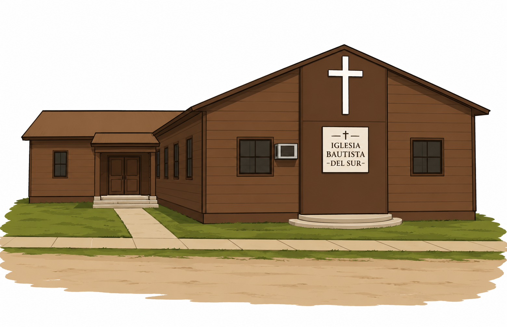
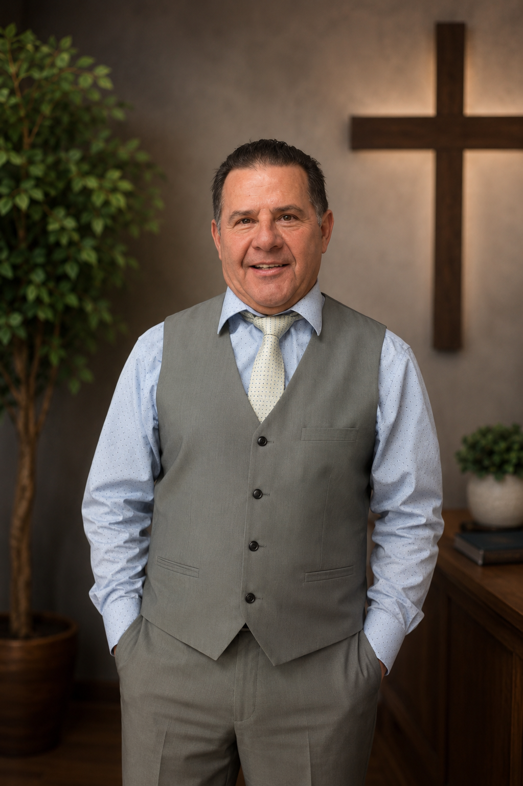

Bienvenidos a casa
Una iglesia hispana para adorar, crecer y servir juntos.
Iglesia Bautista Del Sur es una comunidad centrada en Cristo donde tu familia puede encontrar Palabra, oración, amistad y propósito.
Iglesia local
Iglesia Bautista Del Sur

Servicio dominical
Domingos 10:30 AM MT
Lo esencial
Un lugar para conocer a Jesús y caminar acompañado.
Nuestra historia
Conoce quiénes somos
Lee sobre nuestra fe, nuestros valores y el corazón de la iglesia.
ReunionesServicios y estudios
Encuentra horarios, qué esperar y cómo participar durante la semana.
Primera visitaPlanifica tu visita
Encuentra dirección, horario principal y pasos sencillos para venir por primera vez.
Visítanos
Domingo a las 10:30 AM MT
124 Durffee St, Syracuse, KS 67878
Nuestra iglesia
Fe bíblica, comunidad cercana y esperanza para cada familia.
Somos una congregación hispana que desea ayudar a cada persona a conocer a Jesús, crecer como discípulo y servir con amor a nuestra comunidad.
Misión
Compartir a Cristo de manera clara, cálida y fiel a la Biblia.
Queremos que cada visita se sienta respetada y bien recibida. Nuestra iglesia existe para adorar a Dios, enseñar Su Palabra, fortalecer familias y formar creyentes que vivan su fe durante toda la semana.
Ya sea que lleves años en la fe o estés empezando a buscar respuestas, aquí hay un lugar para escuchar, preguntar, aprender y caminar con otros.
Liderazgo de servicio
Siervo de Dios Fredi Gonzalez

Siervo de Dios
Fredi Gonzalez
Teléfono de contacto
(620) 384-8104
Valores
Lo que guía nuestra vida juntos
Palabra de Dios
Predicamos y enseñamos la Biblia con claridad para la vida diaria.
Familia espiritual
Cuidamos relaciones sanas donde las personas pueden crecer acompañadas.
Servicio con amor
Servimos a la iglesia y a nuestros vecinos con humildad y compasión.
Bienvenida sincera
Recibimos a cada persona con respeto, paciencia y hospitalidad.
Nuestra fe
Creencias bautistas centradas en Cristo y la Biblia.
Como iglesia bautista del sur, nuestras convicciones siguen el énfasis bíblico expresado en el Baptist Faith and Message 2000.
La Biblia
Creemos que la Biblia es la Palabra de Dios y la autoridad para la fe y la vida.
Dios
Creemos en un solo Dios vivo y verdadero: Padre, Hijo y Espíritu Santo.
Jesucristo
Creemos que Jesús murió por nuestros pecados, resucitó y salva a todo el que cree en Él.
La iglesia
Creemos que la iglesia local adora, enseña, sirve y anuncia el evangelio.
Bautismo y Cena del Señor
Practicamos el bautismo de creyentes y la Cena del Señor como actos de obediencia.
Misiones
Creemos que cada creyente y cada iglesia son llamados a compartir a Cristo.
Reuniones
Horarios y oportunidades para reunirse.
Los servicios son en español, con una bienvenida clara para visitantes y familias que están conociendo la iglesia por primera vez.
Culto de adoración
10:30 AM MT
Predicación bíblica, oración, alabanza y comunión como iglesia.Escuela bíblica
7:00 PM MT
Clases bíblicas para aprender, hacer preguntas y crecer en la fe.Noche de oración
7:00 PM MT
Un tiempo dedicado a buscar a Dios y orar por la iglesia, las familias y la comunidad.Qué esperar
Un servicio reverente, sencillo y centrado en Cristo.
- Música congregacional y oración.
- Mensaje bíblico práctico y fiel a la Escritura.
- Personas listas para ayudarte si visitas por primera vez.
- Ambiente familiar, respetuoso y cercano.
Predicaciones
Sigue la predicación en vivo o mira mensajes recientes.
Cuando Fredi Gonzalez comparta la Palabra en línea, esta página puede llevar a los visitantes directamente a la transmisión o a los mensajes grabados.
En vivo
Transmisión del servicio
La información de transmisión estará disponible pronto. Por ahora, llama a la iglesia para preguntar cómo ver las predicaciones de Fredi Gonzalez.
Archivo de predicaciones
Cuando el enlace oficial esté listo, esta sección puede dirigir a los mensajes grabados.
Domingos 10:30 AM MT
La transmisión puede aparecer cuando el servicio esté en vivo.
Vida en comunidad
Ministerios para servir y crecer.
La iglesia no es solo un lugar para asistir; es una familia donde cada persona puede crecer, servir y usar sus dones.
Apoyo para hogares y matrimonios
Espacios de amistad, oración y enseñanza para ayudar a las familias a caminar con Cristo.
Fe con preguntas honestas
Un ambiente sano para aprender la Biblia, formar amistades y crecer con propósito.
Cuidado y enseñanza con amor
Lecciones apropiadas para su edad, seguridad y una bienvenida cariñosa para los más pequeños.
Manos listas para bendecir
Oportunidades para servir en hospitalidad, oración, apoyo práctico y alcance local.
Primera visita
Queremos que tu primera visita sea sencilla.
Si vienes por primera vez, no tienes que saber todo de antemano. Te esperamos con una sonrisa y con personas listas para orientarte.
Antes de venir
- Llega unos minutos antes para encontrar asiento con calma.
- Puedes venir con ropa cómoda y respetuosa.
- Si tienes niños, alguien puede ayudarte a encontrar el área adecuada.
- Si prefieres hablar con alguien primero, mándanos un mensaje.
Próximo servicio
Domingo a las 10:30 AM MT
Los horarios están en Mountain Time. Estamos ubicados en 124 Durffee St, Syracuse, KS 67878.
Contacto
Nos encantaría conocerte.
Si tienes preguntas, deseas visitar o necesitas hablar con alguien, comunícate con la iglesia y con gusto te orientamos.
Privacidad
Política de privacidad
Esta página explica cómo Iglesia Bautista Del Sur maneja la información que los visitantes comparten a través del sitio web.
Información que se recopila
Si envías un formulario o haces clic para contactar a la iglesia, podemos recibir tu nombre, correo, teléfono y el mensaje que decidas compartir.
Cómo se utiliza
La información se usa solamente para responder preguntas, coordinar visitas, compartir información de la iglesia o dar seguimiento cuando sea solicitado.
Compartir información
La iglesia no vende información personal. Solo se comparte cuando sea necesario para responder tu solicitud o cuando la ley lo requiera.